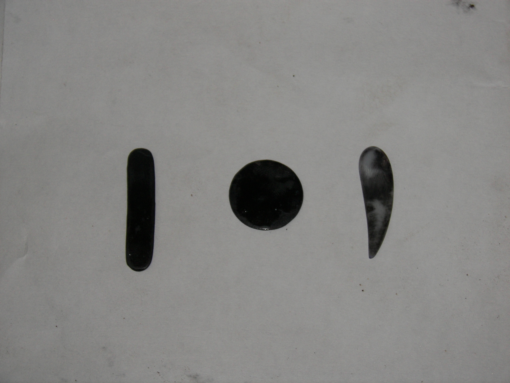
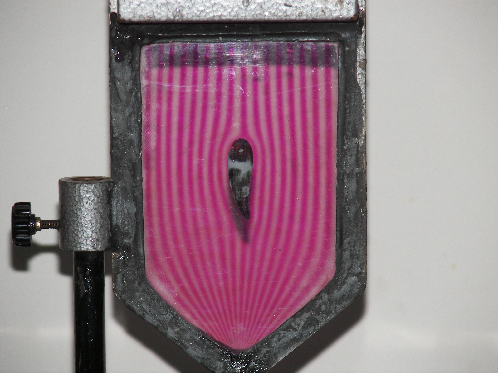
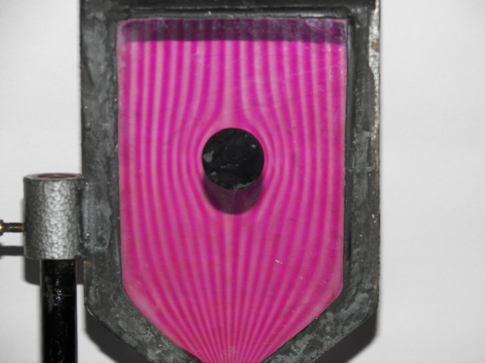

The Hele-Shaw Apparatus produces a flow pattern similar to that of potential flow.
It consists of two parallel transparent thick plates clamped together along the edges with a narrow space in between.
The uniform narrow space between the plates is attached to two small tanks of rectangular cross-section at the top end.
The tanks are connected to the slit formed by the transparent sheets by set of small holes arranged in a row.
The other end of the rectangular slit is made to terminate into a circular hole.
One of the tanks is filled with water and other with the dye.
Once the circular passage at the bottom end is opened,the flow of water and dye take place through the rectangular passage.
A uniform flow field is established in the rectangular slit of the Hele-Shaw apparatus.

Streamlines Models
Streamline around bluff body


Streamline around an aerofoil
Streamline around a circular cylinder
Photographs of the flow pattern around different models is shown in above figures.The velocity of the flow through the apparatus is determined
by measuring the volume rate.For this we need a stop watch and a beaker.